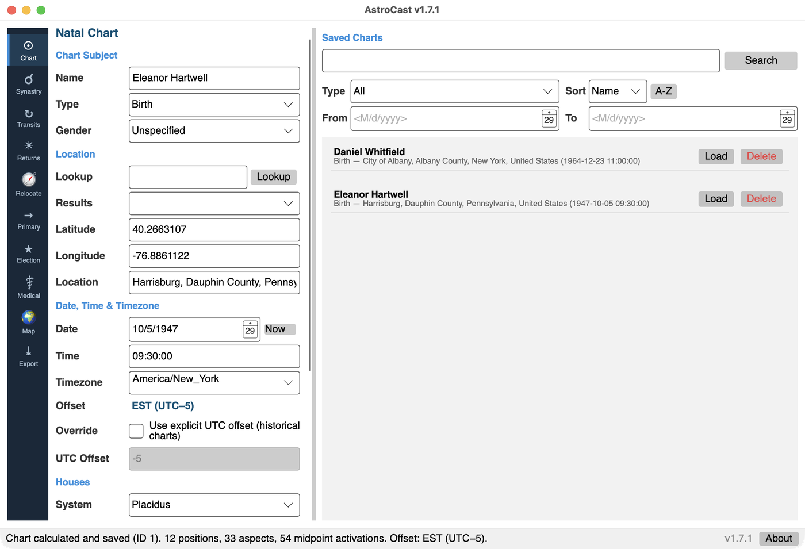
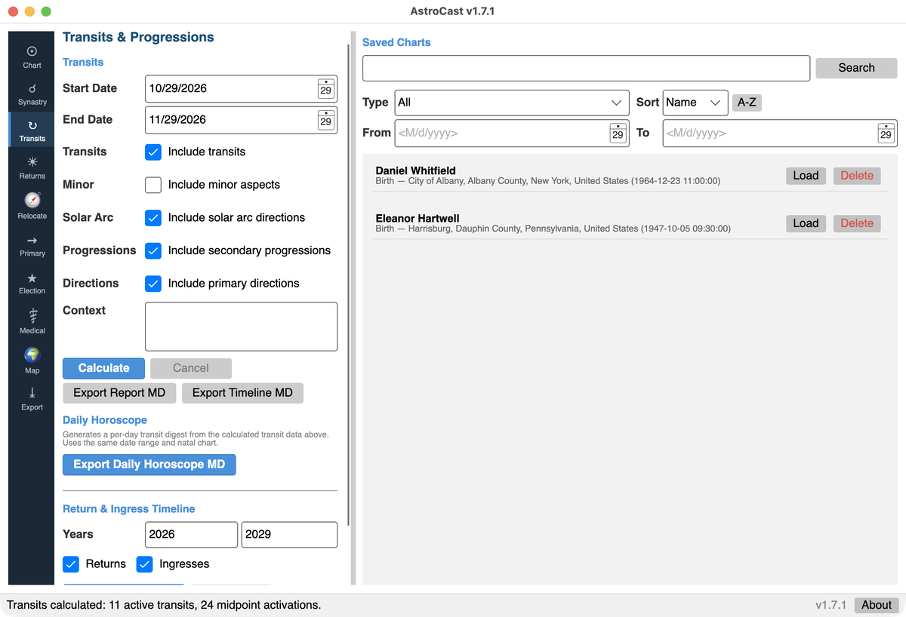
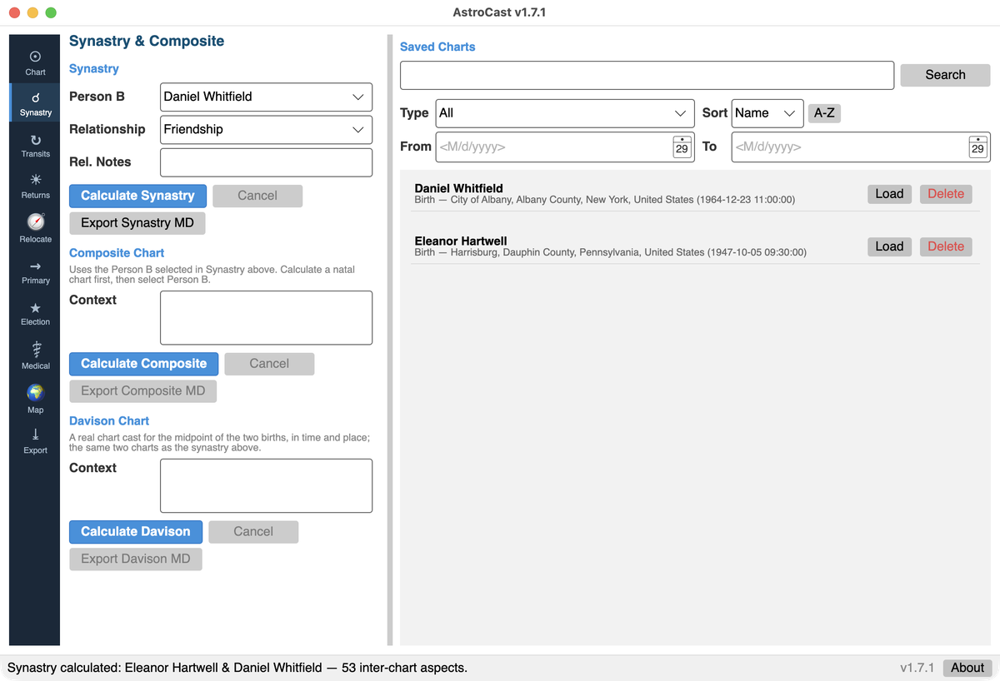
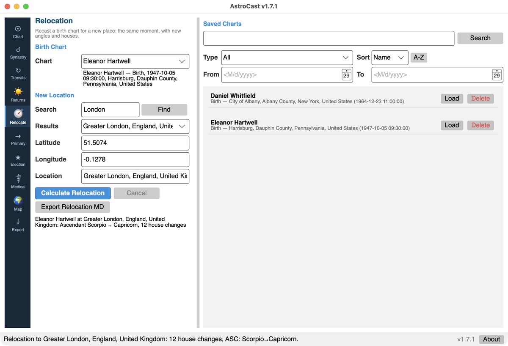
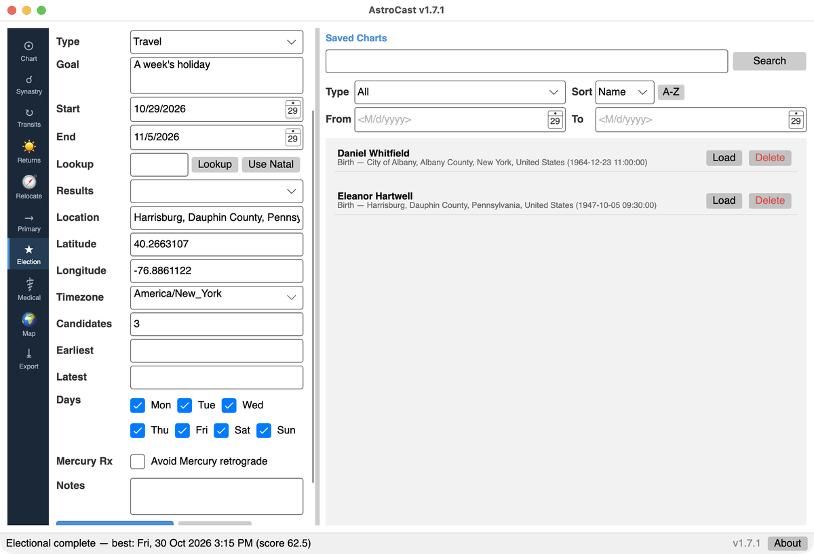
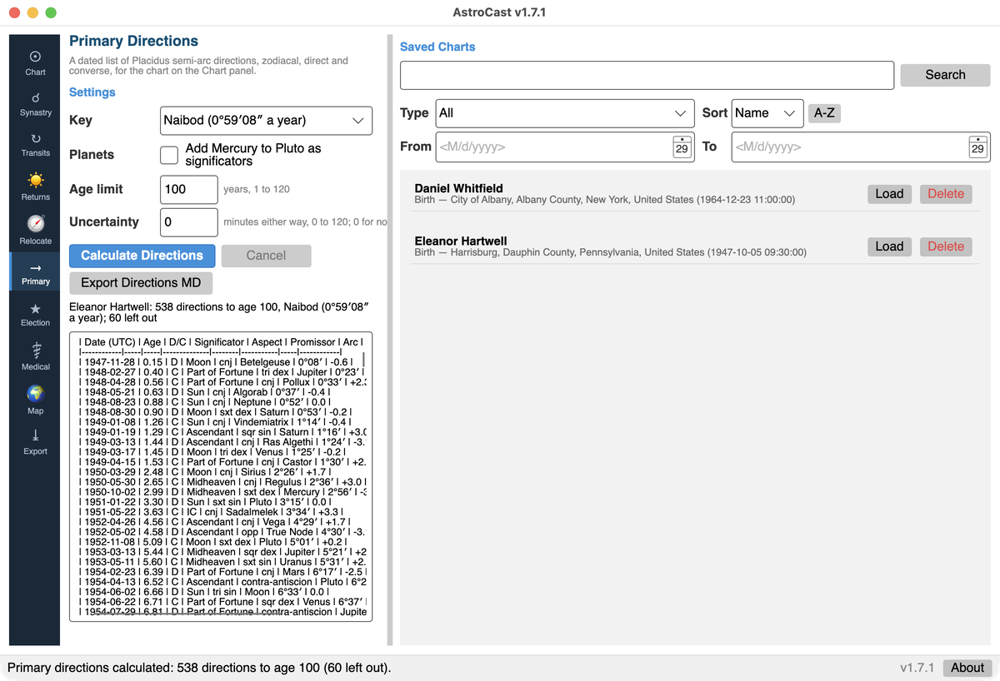
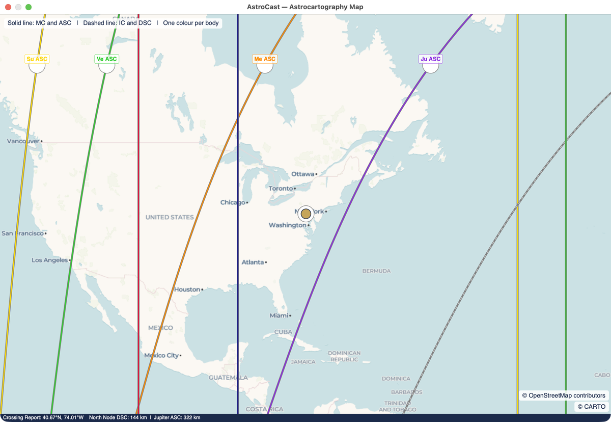

Select a picture to open it full size.
Download AstroCast
Choose your computer. Each button downloads the file straight from the AstroCast releases on GitHub.
macOS
Download for macOS (.dmg)AstroCast-v1.7.1-macOS-arm64.dmg (68.4 MB)
Needs a Mac with Apple silicon, on macOS 15 or later.
Prompt library
Download the prompt library (.zip)AstroCast_Prompt_Library_2026-10-22.zip (1.0 MB)
The prompts and their guide, for any computer. Unzip it anywhere.
Windows: nothing else to install. The .NET runtime and the Swiss Ephemeris are inside the installer.
Windows: one extra step the first time. The installer is not signed with a Windows certificate, so Windows SmartScreen asks once before it runs. Choose More info, then Run anyway.
Mac: signed and notarized. The app is signed with a Developer ID and notarized, so macOS opens it without a warning.
The installers do not carry the prompts. To get written readings, download the prompt library as well.
Get started in three steps
-
Install it
On Windows, run the installer you downloaded. On a Mac, open the disk image and drag AstroCast to Applications.
-
Cast and save your first chart
On the Chart panel, enter a name, search for the birthplace (the time zone fills in from it), enter the date and time, and press Calculate & Save. Then press Save Markdown to write the chart report: a plain text file you can read as it is.
-
Get a written reading
Download the prompt library and pick the prompt for the report you made. In a new chat with an AI assistant, paste the whole prompt, then the report, then a line saying what you want. Treat the reading as an aid to your own judgement, not a replacement for it.
What it does
The program has ten panels. Each one calculates on screen and exports what it shows as a report.
Chart
Birth, event and question charts
Cast a chart for a birth, an event, or the moment a question is asked (a horary chart). AstroCast works out the positions, houses, aspects and more, and saves the chart for later.
Synastry
Compare two charts
Synastry is the comparison of two charts, usually two people's. AstroCast also casts the pair's composite chart and their Davison chart.
Transits
What is happening over a period
Transits are the moving sky set against a birth chart. See a period's transits, secondary progressions, solar arcs and primary directions, as a report, a timeline or a daily horoscope.
Returns
Solar, lunar and planetary returns
A solar return is the chart of the Sun's return to its place at birth. Also here: lunar and planetary returns, a planet's cycle, and series such as lunations and eclipses.
Relocate
The chart at another place
The birth chart cast at another place.
Primary
Primary directions for a whole life
A dated list of primary directions from birth onward, with a check of how sensitive each date is to the birth time.
Election
Choose a good moment
Searches a range of dates for the best moments for something you plan, and scores them.
Medical
Traditional medical astrology
Temperament, the health houses and the traditional correspondences. The medical prompts that read this report are for education and research; they do not diagnose or advise treatment.
Map
Your chart on a world map
Astrocartography draws lines on a world map where each planet was rising, setting, or at its highest or lowest point at the moment of birth.
Export
Every report in one place
All the exports together, the chart as a printable PDF, and a backup of your saved charts.
AstroCast in use
Select a picture to open it full size.












Documentation
AstroCast comes with two guides, and both are free to read and download.
User Guide
It takes you from installing AstroCast to a finished report. The first three chapters are enough to cast your first chart; the rest go panel by panel.
Open the User Guide (PDF, 26 pages, 3.8 MB)Prompt Library Guide
The prompt library turns a report into a written reading when you hand both to an AI chat. This guide tells you how: making the export, choosing the prompt, submitting, and what comes back.
Open the Prompt Library Guide (PDF, 23 pages, 0.5 MB)Shorter step-by-step pages are under Help
Both guides can also be read on GitHub: User Guide Prompt Library Guide
See what you get
AstroCast writes the report. An AI assistant, given the report and a prompt, presents it, organises it and highlights the patterns in it. The prompts are an aid to an astrologer, not a replacement for one. These are real examples; each page says what it shows and how it was made.
Three months of transits
The transit timeline of Eleanor Hartwell, an invented person, for January to March 2027.
A birth time put to the test
A public figure's primary directions, and a reading that tests the published birth time against ten dated events.
The year ahead
Eleanor Hartwell's solar return for 2026: the chart of her year from October 2026 to October 2027.
A question asked of the sky
A horary chart answers a question from the moment it is asked. This one is a real question, with a note of what happened.
The prompt library
AstroCast calculates; it does not interpret. The prompt library is the other half: thirty prompts, one for each kind of report, that turn a report into a written reading when you give both to an AI chat. They are written for Claude, ChatGPT and Copilot, and for any assistant that reads a long instruction and a pasted document.
The prompts are an aid to an astrologer, not a replacement for one. An assistant is good at presenting a long report, organising it and highlighting the patterns in it. Judging what those patterns mean stays with you. Two of the samples show it plainly: a transit timeline set out by date, and a birth time tested against ten dated events.
The prompts are plain text files. You do not need the source code to use them: the library is one download, with its guide as a PDF, and you can unzip it anywhere.
A reading is an interpretation, not fact. The three medical prompts are for education and research: they do not diagnose, predict clinical outcomes or advise treatment.
Download the prompt library Prompt Library Guide (PDF) Your first reading, step by step
The map's background
The Map panel draws its streets and place names from CARTO, a map service whose map tiles need a key. AstroCast ships without one, so at first the map draws its lines over a blank background and says Base map unavailable: no CARTO key. To add the background:
- Request a free key from CARTO (free for non-commercial use under CARTO's own terms).
- Put the key, alone, in a file named
carto-key.txt. - Place that file beside
AstroCast.exeon Windows, or in~/Library/Application Support/AstroCaston macOS. - Start AstroCast again. It reads the key at its next start.
System requirements
- Windows: Windows 10 or 11, 64-bit.
- Mac: a Mac with Apple silicon, running macOS 15 or later.
- Internet: needed only for the place lookup and for the map's background. Everything else happens on your machine.
Checking your download
Each file has a fingerprint called a SHA-256 checksum. If the checksum of the file you downloaded matches the one below, the file arrived complete and unchanged.
- AstroCast_1.7.1.msi
229430c6612757fe969dc5956d8e054d1121347ad18fd4e061c38d9b588b53a0- AstroCast-v1.7.1-macOS-arm64.dmg
a5a8a6c0c62b6cdc7659bde1425ffcd046f0159a1af9e3763ed6a8be0e50b013- AstroCast_Prompt_Library_2026-10-22.zip
72731f7fb5ec2a9713e5ea7b1089d5aa296c0069e9bf3705bd27939fdec1f82b
On Windows
Open PowerShell in the folder that holds the file and run this, with the name of the file you downloaded:
Get-FileHash .\AstroCast_1.7.1.msi -Algorithm SHA256
On a Mac
Open Terminal in the folder that holds the file and run this, with the name of the file you downloaded:
shasum -a 256 AstroCast-v1.7.1-macOS-arm64.dmg
Common questions
Is it free?
Yes. AstroCast is free software under the GNU Affero General Public License, version 3 or later. The prompt library is licensed under CC BY-SA 4.0: you may copy, adapt and share it, with credit and under the same licence.
Do I need to install anything else?
No. On Windows the installer needs nothing else: the .NET runtime and the Swiss Ephemeris are inside. On a Mac, open the disk image, drag AstroCast into Applications and open it.
Does it run on an Intel Mac?
No. The macOS version needs a Mac with Apple silicon running macOS 15 or later.
Why does Windows warn me about the installer?
The installer is not signed with a Windows certificate, so Windows SmartScreen says the publisher is unknown. Choose More info, then Run anyway.
Which AI assistants do the prompts work with?
The prompts are written for Claude, ChatGPT and Copilot, and for any assistant that reads a long instruction and a pasted document.
Does the AI replace an astrologer?
No. The prompts are an aid to an astrologer, not a replacement for one. An AI assistant presents a long report, organises it and highlights the patterns in it. Judging what those patterns mean stays with the person reading the chart.
Which zodiac and house systems does it use?
The tropical zodiac. The house system is Placidus unless you choose another: Koch, Equal, Whole Sign, Regiomontanus, Campanus, Alcabitius, Porphyry or Morinus.
Where are my charts kept?
In AstroCast's own database on your computer. On Windows it is the file astrocast.db beside the program; on a Mac it is in ~/Library/Application Support/AstroCast. Two things use the internet: the place lookup and the map's background. Everything else happens on your machine.
Why is the map blank?
The map's background comes from CARTO, a map service that needs a key, and AstroCast ships without one. The map still works and draws every line. To see the background, add a free key of your own: the steps are under The map's background on this page.
What years can it cast?
Dates run from 1200 to 2399. Dates before 15 October 1582 are read and printed on the Julian calendar.
How do I report a problem?
Use the Issues page on GitHub. Issues are public, so please do not post anyone's real birth data: the User Guide's invented chart, Eleanor Hartwell, shows most problems.